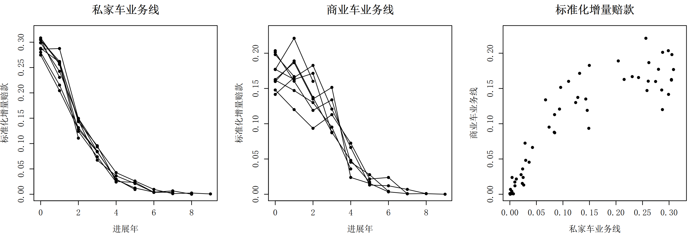
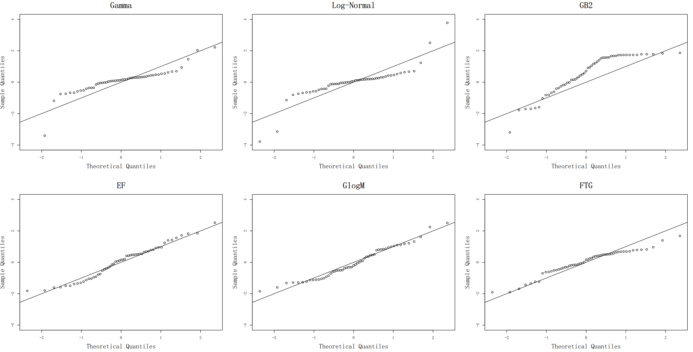
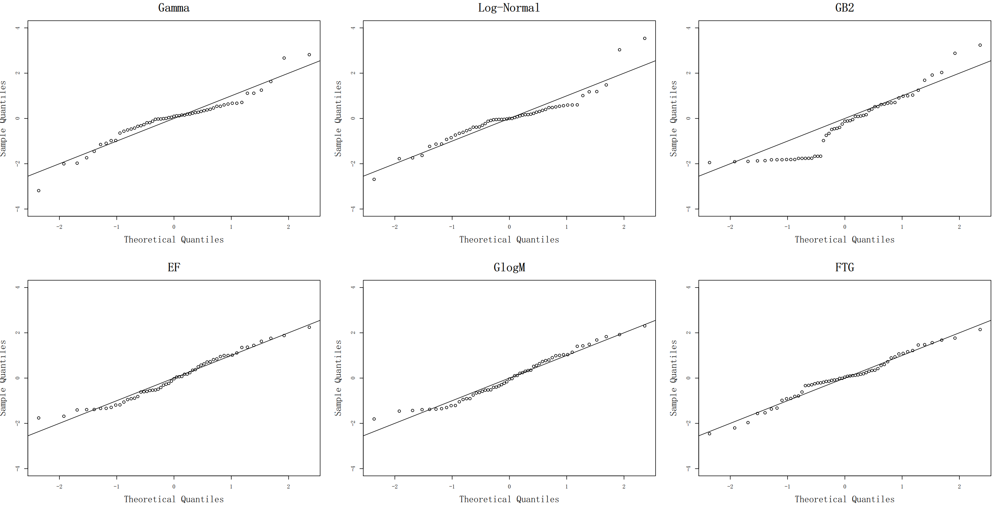
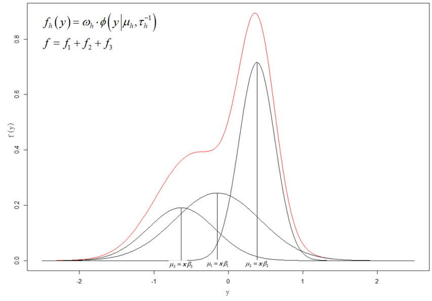
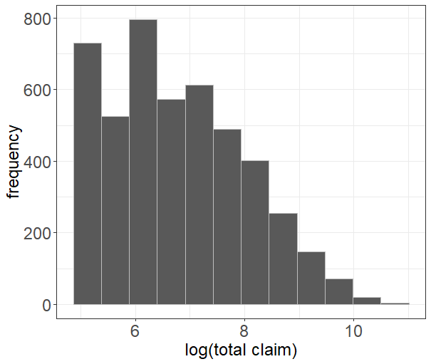
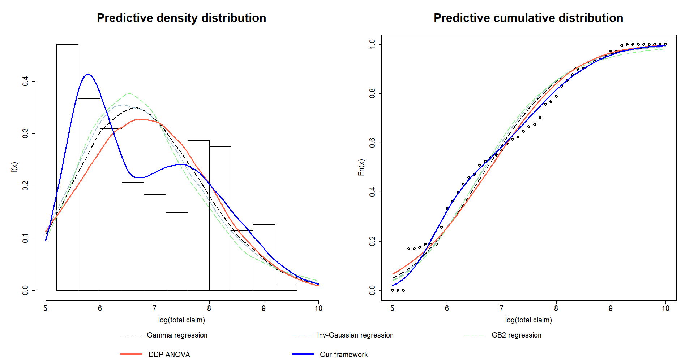

第11章 拓展研究案例
本章学习目标
本章学习目标
- 理解厚尾分布在准备金评估中的重要性及Copula建模方法。
- 掌握双参数提升树模型在索赔频率建模中的应用。
- 了解贝叶斯非参数回归模型的基本思想和实现方法。
- 理解前沿方法与传统方法相比的优势和适用条件。
本章将介绍拓展研究案例的相关理论与应用。
11.1 基于厚尾分布的相依准备金评估
11.1.1 三种厚尾分布简介
与传统准备金评估方法相比，广义线性模型可以提供更多关于未决赔款分布的信息，如预测结果的方差和分位数等。然而，由于增量赔款数据通常存在尖峰厚尾性，广义线性模型的指数族分布假设（如伽马分布、逆高斯分布）可能并不适合描述实际数据的特征。此外，在精算实务中，保险公司通常需要同时评估多条业务线的准备金，并将它们合并得到保险公司的总准备金水平。由于各业务线的赔款之间往往存在一定的相依关系，总准备金通常并不等于各条业务线准备金评估结果的简单相加，还需要采取一定方法对相依性进行调整。
通过梳理可以发现，在应用参数化广义线性模型评估准备金时，现有文献大多选择伽马分布或对数正态分布描述增量赔款。此外，由于GB2分布的形式灵活、且包含了许多常用的分布族，在近年来也逐渐被用于非寿险准备金评估。除了现有文献提出的GB2分布外，本节还将探讨3种厚尾分布——幂Fréchet分布、广义对数Moyal分布和全尾伽马分布，在上述分布假设下建立准备金评估模型（GAMLSS模型）。
1. 幂Fréchet分布
幂Fréchet分布（exponentiated Fréchet distribution，简称EF分布）是Gündüz和Genç~(2016)~提出的一种三参数连续型分布。通过对Fréchet分布进行幂变化，其在分布函数中额外引入了一个形状参数，使分布的形式更加灵活。
假定$G(\cdot)$表示两参数Fréchet分布的累积分布函数，则EF分布的累积分布函数定义为$F=1-(1-G)^\alpha$，概率密度函数具有如下形式：
其中，$\alpha >0, \lambda > 0$为分布的两个形状参数，$\tau > 0$为尺度参数。
EF分布属于一类广义的指数变换分布族，对于有偏数据的拟合效果较好；该分布同时保留了Fréchet分布尾部较厚的特征，适用于刻画长尾数据。然而，EF分布的期望和方差不存在显式解，且保险精算领域常用的风险度量指标也难以求解，这些缺陷可能制约其在精算实务中的应用。
为构建EF分布的GAMLSS模型，可参照gamlss程序包的文档，计算该分布的对数概率密度函数关于参数$\alpha,\lambda,\tau$的一阶和二阶偏导数，并在R软件中进行定义。本小节对此不进行展开。
2. 广义对数Moyal分布
广义对数Moyal分布（generalized log-Moyal distribution，简称GlogM分布）是在Moyal分布的基础上，对随机变量进行指数变换得到的两参数连续型分布，见Bhati和Ravi~(2018)。
假定随机变量$Z$服从标准Moyal分布，则$Y = \mu \cdot e^{\sigma Z}$服从GlogM分布，概率密度函数为：
其中，$\sigma > 0$为分布的形状参数，$\tau > 0$为尺度参数。
当$k < {1}/{2\sigma}$时，GlogM分布的$k$阶中心距存在，由此可以导出期望和方差如下：
GlogM分布为单峰型分布，具有尖峰、厚尾、右偏的优良性质，符合保险损失数据的一般特征。此外，该分布对精算领域常用的风险度量如VaR、TVaR以及有限期望损失、平均超额损失等指标均存在显式解。这些性质使GlogM分布成为拟合增量赔款数据的优秀备选分布。
为构建GAMLSS模型，同样需要计算GlogM分布的对数概率密度函数关于其参数的一阶和二阶偏导数，本小节对此不进行展开。
3. 全尾伽马分布
全尾伽马分布（full tails Gamma distribution，简称FTG分布）是Del Castillo等~(2017)~提出的三参数连续型分布，概率密度函数具有如下形式：
其中，$\alpha \in \mathbb{R}$为分布的形状参数，$\theta > 0$为尺度参数，$\rho > 0$为截断参数。$\Gamma(\alpha,\rho)$为上不完全伽马函数，定义为$\Gamma(\alpha ,\rho) = \int_{\rho}^{\infty} t^{\alpha -1} \cdot e^{-t}\ \mathrm{d}t$。
当参数$\alpha > 0$时，FTG分布等价于左截断伽马分布；当$\alpha > 0, \theta > 0, \rho = 0$时，退化为伽马分布。当$\alpha < 0$时，FTG分布属于一类完备的指数族模型（full exponential model），此时若令$\sigma = \rho / \theta > 0$，则当$\theta \rightarrow 0$时，FTG分布退化成参数为$\alpha$和$\sigma$的帕累托分布。可见，FTG分布包含了伽马分布和帕累托分布等常见的损失分布，分布的形式更加灵活，应用范围更加广泛。
FTG分布的矩母函数在其定义域上总是存在，由此可以导出其均值和方差如下：
其中，$\mu = {\rho^{\alpha} e^{-\rho}}/{\Gamma (\alpha, \rho)}$。
FTG分布具有许多良好的性质，如尺度变换不会改变FTG分布的类型、超额损失的条件分布仍然属于同一分布族等，因此比较适合描述保险损失数据。此外，FTG分布更加注重对尾部风险的刻画，当赔款数据的尾部较厚时，应用FTG分布能够有效改进拟合效果。
对数概率密度函数关于其参数的一阶和二阶偏导数，本小节不进行展开。
11.1.2 单条业务线的准备金评估结果
本节使用北美产险精算师协会（Casualty Actuarial Society）的“Loss Reserving Data Pulled From NAIC Schedule P”数据集，数据集提供了美国多家财产保险公司在不同业务上的累积赔款数据。进一步选定Employers Mut Co Of Des Moines公司（GRCODE 620），提取其“私家车业务”和“商业车业务”在10个年度的累积赔款流量三角形数据进行分析。在建立准备金评估模型之前，首先对累积赔款数据进行差分，得到各进展年度的增量赔款，再将增量赔款除以对应事故年的保费水平得到标准化增量赔款。

前图~展示了两条业务线在不同事故年的标准化增量赔款及其进展趋势。从图中可以看出，私家车业务线的增量赔款在不同事故年的进展趋势具有较高的一致性；对于商业车业务线，当进展年较小时，其增量赔款进展在事故年间呈现出明显的差异性，但这种差异性随着进展年的增加而逐渐消除。两条业务线的增量赔款随着进展年的增加均趋向于0，表明未决赔款能够在10个进展年内赔付完成。前图~同时还给出了两条业务线标准化增量赔款的联合散点图，可以看出，联合分布在总体上具有较明显的正相依性，但在赔款数额较大时，又呈现出一定的负相依性。
私家车业务与商业车业务的相依关系可以通过相关系数进行说明：计算可得，两条业务线标准化增量赔款的Pearson相关系数、Kendall秩相关系数和Spearman等级相关系数分别为0.88、0.73和0.90，且检验的$p$值均显著不为0，同样证明两条业务线存在显著的正相依性。不同业务线的增量赔款在相同的事故年和进展年下的正相依关系，既与车险业务的赔款进展模式有关，也可能来源于保险公司自身理赔政策或保险市场环境的变化。
假设标准化增量赔款数据服从上述三种厚尾分布，在合适的参数中引入事故年和进展年作为自变量（需转换为类别型因子），可分别建立如下准备金评估模型：
其中，每个$\boldsymbol{X}_i$对应一组事故年和进展年的组合。
前表~比较了现有文献常用的伽马分布、对数正态分布、GB2分布以及3种厚尾分布假设下，模型的对数似然函数、AIC和BIC值。
| 私家车业务线 | 商业车业务线 | |||||
|---|---|---|---|---|---|---|
| 分布假设 | 对数似然 | AIC | BIC | 对数似然 | AIC | BIC |
| 伽马分布 | $141.476$ | $-242.952$ | $-248.145$ | $144.428$ | $-248.856$ | $-254.048$ |
| 对数正态分布 | $136.715$ | $-233.429$ | $-238.622$ | $145.322$ | $-250.644$ | $-255.837$ |
| GB2~分布 | $180.808$ | $-317.615$ | $-323.327$ | $173.444$ | $-302.888$ | $-308.600$ |
| EF~分布 | $173.993$ | $-305.986$ | $-311.439$ | $170.553$ | $-299.107$ | $-304.559$ |
| GlogM~分布 | $187.877$ | $-335.754$ | $-340.947$ | $170.266$ | $-300.533$ | $-305.726$ |
| FTG~分布 | $188.971$ | $-335.942$ | $-341.394$ | $167.987$ | $-293.974$ | $-299.426$ |
| 私家车业务线 | 商业车业务线 | |||||
|---|---|---|---|---|---|---|
| 模型参数 | EF 分布 | GlogM 分布 | FTG 分布 | EF 分布 | GlogM 分布 | FTG 分布 |
| 截距项 | $3.924^{***}$ (0.076) | $-3.294^{***}$ (0.127) | $171.610^{***}$ (27.969) | $2.585^{**}$ (0.728) | $-2.550^{***}$ (0.124) | $56.829^{***}$ (10.872) |
| 事故年 1989 | $0.179^{***}$ (0.016) | $0.040$ (0.028) | $-1.296$ (1.024) | $-0.072^{*}$ (0.038) | $0.068$ (0.042) | $-1.218$ (1.571) |
| 事故年 1990 | $0.166^{***}$ (0.035) | $0.022$ (0.031) | $-0.864$ (1.340) | $-0.031$ (0.034) | $0.029$ (0.046) | $-3.479^{*}$ (1.907) |
| 事故年 1991 | $0.164^{***}$ (0.036) | $0.058^{*}$ (0.031) | $-1.628$ (1.636) | $0.035$ (0.039) | $-0.037$ (0.046) | $-1.749$ (1.865) |
| 事故年 1992 | $0.107^{**}$ (0.034) | $0.105^{***}$ (0.027) | $-6.569^{**}$ (2.076) | $0.028^{***}$ (0.007) | $-0.032$ (0.037) | $-2.370$ (2.337) |
| 事故年 1993 | $0.159^{***}$ (0.039) | $0.063^{*}$ (0.031) | $-6.400^{*}$ (3.186) | $0.016$ (0.019) | $-0.019$ (0.042) | $-5.568^{*}$ (3.076) |
| 事故年 1994 | $0.147^{***}$ (0.038) | $0.077^{*}$ (0.029) | $-7.411$ (4.826) | $0.026$ (0.023) | $-0.031$ (0.047) | $-1.235$ (3.906) |
| 事故年 1995 | $0.113^{**}$ (0.045) | $0.110^{*}$ (0.038) | $-7.791$ (6.517) | $0.102^{**}$ (0.036) | $-0.111^{**}$ (0.042) | $7.957$ (5.150) |
| 事故年 1996 | $0.165^{**}$ (0.056) | $0.041$ (0.037) | $-5.553$ (9.308) | $0.077^{*}$ (0.043) | $-0.080$ (0.056) | $3.966$ (5.997) |
| 事故年 1997 | $0.237^{**}$ (0.098) | $0.029$ (0.048) | $-0.915$ (13.853) | $0.154^{**}$ (0.051) | $-0.160^{**}$ (0.064) | $10.646$ (8.909) |
| 进展年 1 | $-0.130$ (0.141) | $0.167^{***}$ (0.023) | $-26.934^{***}$ (3.741) | $-0.021$ (0.036) | $0.017$ (0.037) | $-0.781$ (3.508) |
| 进展年 2 | $-0.459^{**}$ (0.137) | $0.488^{***}$ (0.027) | $-90.225^{***}$ (13.979) | $-0.131^{**}$ (0.038) | $0.126^{**}$ (0.038) | $-9.427^{**}$ (3.892) |
| 进展年 3 | $-0.711^{***}$ (0.135) | $0.729^{***}$ (0.027) | $-120.307^{***}$ (19.284) | $-0.261^{***}$ (0.027) | $0.257^{***}$ (0.038) | $-17.324^{***}$ (4.675) |
| 进展年 4 | $-1.037^{***}$ (0.138) | $1.083^{***}$ (0.029) | $-150.693^{***}$ (24.534) | $-0.614^{***}$ (0.037) | $0.607^{***}$ (0.046) | $-38.249^{***}$ (7.577) |
| 进展年 5 | $-1.219^{***}$ (0.138) | $1.253^{***}$ (0.028) | $-158.871^{***}$ (25.926) | $-0.807^{***}$ (0.032) | $0.799^{***}$ (0.034) | $-47.770^{***}$ (9.128) |
| 进展年 6 | $-1.454^{***}$ (0.136) | $1.510^{***}$ (0.030) | $-167.323^{***}$ (27.368) | $-1.084^{***}$ (0.048) | $1.078^{***}$ (0.049) | $-51.198^{***}$ (9.685) |
| 进展年 7 | $-1.478^{***}$ (0.098) | $1.719^{***}$ (0.034) | $-168.510^{***}$ (27.565) | $-1.295^{***}$ (0.050) | $1.291^{***}$ (0.049) | $-54.895^{***}$ (10.437) |
| 进展年 8 | $-1.964^{***}$ (0.142) | $2.008^{***}$ (0.039) | $-170.389^{***}$ (27.780) | $-1.322^{***}$ (0.040) | $1.315^{***}$ (0.048) | $-57.818^{***}$ (11.853) |
| 进展年 9 | $-1.583^{***}$ (0.099) | $1.842^{***}$ (0.048) | $-171.000^{***}$ (27.856) | $-1.717^{***}$ (0.050) | $1.710^{***}$ (0.063) | $-122.105$ (115.816) |
| 参数 1 | $\alpha=0.143$ (0.038) | ${\rm ln}\tau=-31.587$ (4.013) | $\theta=570.896$ (94.673) | $\alpha=0.463$ (0.425) | ${\rm ln}\tau=-23.866$ (3.029) | $\theta=325.893$ (58.995) |
| 参数 2 | ${\rm ln}\tau=-78.615$ (1.867) | $\rho=0.026$ (0.079) | ${\rm ln}\tau=-25.075$ (19.476) | $\rho=0.691$ (1.014) | ||
从前表~中可以看出，对于私家车业务线，FTG分布与GlogM分布假设下的模型对数似然值明显高于其他分布，其次为GB2分布。进一步结合AIC和BIC值，可以判断FTG回归模型对于私家车业务线的拟合效果最好。对于商业车业务线，GB2分布的对数似然、AIC和BIC值略优于GlogM分布，其次是EF分布。而不论何种业务，伽马回归模型和对数正态回归模型的拟合效果均明显不如其他模型，对于增量赔款的拟合效果最差。
前图~和前图~分别展示了应用6种模型拟合两条业务线的标准化增量赔款数据的分位残差Q-Q图，分位残差的定义为$r_i = \Phi^{-1}[F(y_i;\hat{\boldsymbol{\theta}}_i)]$。通过比较可以看出：对于私家车业务线，伽马回归、对数正态回归和GB2回归模型的残差均严重偏离标准正态分布，而另外三种厚尾分布模型对数据的拟合程度较好；对于商业车业务，GB2回归模型的残差在左尾严重偏离对角线，伽马回归模型和对数正态回归模型的残差基本位于对角线、但在两端仍有少量偏离，而另外三种厚尾分布的分位残差均较好服从标准正态分布。因此，可以认为增量赔款数据存在厚尾特征，需要使用基于厚尾分布的模型，改善准备金评估结果。
对残差进行正态性检验（包括KS检验、CvM检验和AD检验），检验的p值与图像判断结果一致。


下面将进行两个业务线的增量赔款相依性分析。
11.1.3 相依准备金评估结果
在准备金评估研究中，为了解决不同业务线赔款之间的相依性，通常可以采用三种方法。一种方法是对链梯法等确定性模型进行拓展，例如已有文献中提出的多元链梯法和广义多元链梯法。第二种方法是基于贝叶斯分析框架研究不同业务线之间的相依关系，例如引入日历年作为共同随机效应，并通过MCMC（马尔可夫链蒙特卡洛）算法进行估计。第三种方法是在参数化随机模型的基础上，通过Copula描述不同业务线之间的相依关系，即建立Copula回归模型。
以二维场景为例。记$Y_i^{(1)},Y_i^{(2)}$分别表示私家车业务线和商业车业务线的标准化增量赔款，根据Sklar定理，在给定事故年和进展年$\boldsymbol{X}_i$的条件下，两个随机变量的联合分布可以写为：
其中，$F_k(Y_i^{(k)} \mid \boldsymbol{X}_i)$是不同业务线增量赔款的条件边际分布，可以通过上式的任意一个模型进行刻画；$C(\cdot,\cdot)$为二元Copula函数，对应的Copula参数为$\alpha(\boldsymbol{X}_i)$，在简单情况下可以假设$\alpha(\boldsymbol{X}_i) \equiv \alpha$为常数，即两条业务线在各个事故年和进展年的增量赔款都服从相同的Copula结构。此时，Copula回归模型的对数似然函数可以表示为：
其中，$\boldsymbol{\theta}_i^{(k)}$是第$k$条业务线对应的边际分布参数估计值。此处Copula函数主要刻画了$F_1(y_i^{(1)}; \boldsymbol{\theta}_i^{(1)})$与$F_2(y_i^{(2)}; \boldsymbol{\theta}_i^{(2)})$的相依性，等价于边际回归模型的残差之间的相依关系。
由上式可知，Copula回归模型的对数似然函数仍然可以拆分为边际模型的似然与Copula的似然两个部分。在参数估计时，既可以事先求解边际回归模型的极大似然估计，再对Copula部分的似然求极大化，即IFM方法；也可以直接对上式求极大化，同步估计边际回归模型和Copula函数的参数。高维场景下的Copula回归模型类似，只需将$C$替换为高维Copula函数即可。
前表~计算了剔除事故年和进展年效应之后，两条业务线增量赔款的回归模型分位残差的相关系数，等价于计算$\text{cor}(F_1(y_i^{(1)};\hat{\boldsymbol{\theta}}_i^{(1)}), F_2(y_i^{(2)};\hat{\boldsymbol{\theta}}_i^{(2)}))$。从表中可知，两条业务线的模型残差呈现一定的负相依，特别当私家车业务线的增量赔款服从FTG分布、商业车业务线的增量赔款服从GlogM分布或EF分布时，相依性最强。因此，若仅对单独业务线的增量赔款进行建模，无法准确反映两条业务线的相依关系，可能导致总准备金的预测结果不准确。
| 私家车业务 | 分布 | 商业车业务 | ||||||||
|---|---|---|---|---|---|---|---|---|---|---|
| Pearson | Kendall | Spearman | ||||||||
| EF | GlogM | FTG | EF | GlogM | FTG | EF | GlogM | FTG | ||
| 私家车业务 | EF | $-0.060$ | $-0.045$ | $-0.103$ | $-0.034$ | $-0.034$ | $-0.073$ | $-0.056$ | $-0.054$ | $-0.097$ |
| GlogM | $-0.130$ | $-0.134$ | $-0.098$ | $-0.060$ | $-0.060$ | $-0.029$ | $-0.096$ | $-0.094$ | $-0.059$ | |
| FTG | $-0.216$ | $-0.215$ | $-0.187$ | $-0.108$ | $-0.108$ | $-0.077$ | $-0.175$ | $-0.175$ | $-0.127$ | |
值得注意的是，在剔除事故年和进展年的趋势效应后，两条业务线的增量赔款由正相依转变为负相依，这与现有文献中的结论一致。事实上，由于模型残差主要来自增量赔款较大的部分，对应前图~中的右上角，故模型残差也将表现为负相依关系。
假定两条业务线的增量赔款分别服从3种厚尾分布的组合，在每个回归模型组合下，分别考虑高斯Copula、T Copula和Frank Copula作为备选的Copula函数。对于上式，首先使用IFM方法计算参数的初始值，再应用数值优化方法，直接求解模型参数的极大似然估计值。所有模型组合对应的最优Copula结构以及模型评价指标如下表所示。
| 私家车业务 | 商业车业务 | Copula | 对数似然 | AIC | BIC |
|---|---|---|---|---|---|
| EF | EF | 高斯 | $344.938$ | $-603.877$ | $-602.097$ |
| EF | GlogM | 高斯 | $344.609$ | $-605.218$ | $-603.480$ |
| EF | FTG | Frank | $342.641$ | $-599.281$ | $-597.501$ |
| GlogM | EF | 高斯 | $359.206$ | $-634.411$ | $-632.673$ |
| GlogM | GlogM | 高斯 | $358.717$ | $-635.434$ | $-633.736$ |
| GlogM | FTG | Frank | $356.182$ | $-628.364$ | $-626.626$ |
| FTG | EF | 高斯 | $361.184$ | $-636.367$ | $-634.587$ |
| FTG | GlogM | 高斯 | $360.745$ | $-637.489$ | $-635.751$ |
| FTG | FTG | 高斯 | $358.016$ | $-630.033$ | $-628.253$ |
综合上述结果，在为本例数据构建基于厚尾分布的相依准备金评估模型时，最终选取FTG分布和GlogM分布作为私家车和商业车业务线的增量赔款分布假设，边际回归模型的残差由高斯Copula描述，Copula参数的估计值为$-0.277$。需要说明的是，尽管本节仅考虑了3种较常用的Copula结构，在实际应用时，可以根据数据特点在更大的范围内选择最优的Copula结构。
给定模型结构和参数估计结果，下一步即可使用参数化bootstrap重抽样和蒙特卡洛随机模拟方法，生成流量三角形下三角部分的增量赔款的预测值及其分布，并加总得到相依准备金的预测值及其分布。对于Copula回归模型，随机模拟的具体步骤如下：
(1) 从高斯Copula函数$C(\cdot,\cdot; \hat{\alpha})$中，模拟生成流量三角形上三角部分的分布函数模拟值$(u_{ij}^{(1)}, u_{ij}^{(2)}),~i+j \leq I+1$。其中，$\hat{\alpha}$为Copula参数的估计值，上标表示不同的业务线。
(2) 对于每条业务线$k = 1,2$，模拟生成上三角部分标准化增量赔款的bootstrap样本，即$y_{ij}^{*(k)} = F_k^{-1} (u_{ij}^{(k)}; \hat{\boldsymbol{\theta}}_{ij}^{(k)}),~i+j \leq I+1$。其中，$F_k^{-1}(\cdot)$表示两条业务线对应分布函数（即FTG分布和GlogM分布）的逆函数，$\hat{\boldsymbol{\theta}}_{ij}^{(k)}$为对应分布的参数估计值。
(3) 基于bootstrap样本$y_{ij}^{*(k)},~i+j \leq I+1$，在Copula回归模型的框架下，重新求解模型的参数估计值$(\hat{\boldsymbol{\theta}}_{ij}^{*(1)}, \hat{\boldsymbol{\theta}}_{ij}^{*(2)}, \hat{\alpha}^{*})$。
(4) 应用bootstrap模型的参数估计值，模拟生成两条业务线的流量三角形下三角部分的标准化增量赔款的预测值$y_{ij}^{*(k)},~ i+j > I+1$。将其与对应事故年的保费水平相乘，得到增量赔款的预测值。
重复上述步骤（进行多次随机模拟），即可得到不同事故年和进展年下的增量赔款的预测值的分布。将增量赔款按照事故年和业务线分别进行汇总，即可得到对应的未决赔款准备金的预测分布。
前表~展示了在5000次随机模拟时，相依准备金评估模型对两条业务线在不同事故年的准备金预测值的90%置信区间，并与原始数据下三角部分的实际未决赔款进行比较。可以看出，该模型对私家车业务线增量赔款的预测效果较好，各事故年度未决赔款的实际值基本均处于置信区间内；对于商业车业务线，模型略微低估1989和1991两个事故年的未决赔款，高估了1995和1997两个事故年的未决赔款，且对准备金的预测值也高于未决赔款的实际值，表明此时更多关注了准备金的尾部风险。事实上，由于商业车业务线在各个事故年的增量赔款波动较大，导致其预测结果不及私家车业务线稳健。为进一步改善准备金评估结果，后续研究可以尝试其他厚尾分布，或在边际回归建模时引入新的自变量，如日历年效应等。考虑到两条业务线的增量赔款之间的相依关系，模型对单独业务线的评估结果进行了修正，对总准备金的评估结果更加准确。
| 事故年 | 私家车业务线 | 商业车业务线 | 总未决赔款准备金 | |||
|---|---|---|---|---|---|---|
| 实际值 | 90%预测区间 | 实际值 | 90%预测区间 | 实际值 | 90%预测区间 | |
| 1989 | 52 | (0, 314.7) | 69 | (0.2, 15.7) | 121 | (1.4, 320.8) |
| 1990 | 156 | (5.4, 701.2) | 125 | (21.9, 178.5) | 281 | (51.9, 777.7) |
| 1991 | 339 | (18.4, 1352.8) | 1078 | (107.1, 518.2) | 1417 | (210.2, 1638) |
| 1992 | 1712 | (4.7, 756.6) | 1116 | (326.1, 1189.2) | 2828 | (391.1, 1627) |
| 1993 | 2227 | (148, 3295.8) | 2092 | (1215.9, 3293.6) | 4319 | (1877.1, 5531.3) |
| 1994 | 3195 | (800.8, 7742.3) | 6297 | (3471.4, 7713.9) | 9492 | (5436.8, 13059.1) |
| 1995 | 10074 | (4279.7, 16398.2) | 11448 | (12681.5, 22780.3) | 21522 | (19710.3, 34225.5) |
| 1996 | 16117 | (11768.9, 35385.9) | 26085 | (22513.1, 40047.2) | 42202 | (39335.3, 65920.5) |
| 1997 | 34458 | (26592.2, 74479.3) | 41545 | (43827.6, 85251.4) | 76003 | (81590.3, 138585.9) |
| 汇总 | 68330 | (56136.9, 118091.4) | 89855 | (93877.6, 143761.2) | 158185 | (164866.8, 237287.5) |
链梯法是非寿险实务中最常用的准备金评估模型。前表~比较了链梯法（等价于过离散泊松分布假设下的广义线性模型估计值）、独立性模型与Copula相依模型对未决赔款准备金的预测值，由下表可以看出，在厚尾分布假设下无论是独立性模型还是Copula相依模型，对于准备金的预测结果均略高于传统的链梯法。事实上，由于链梯法对准备金的预测结果等价于应用泊松回归模型拟合增量赔款的预测结果，故在使用厚尾分布替代泊松分布假设后，模型对准备金的尾部风险给予了更多关注。此外，独立性模型仅仅将两条业务线的准备金评估结果进行简单加总，没有考虑残差之间的负相依关系，导致总准备金的预测值和标准差均较高；而Copula相依模型对单条业务线的准备金评估结果进行了修正，能够在考虑尾部风险的同时避免过分高估准备金，对公司经营产生影响。
| 模型 | 准备金预测值 | 预测值的标准差 | 变异系数 |
|---|---|---|---|
| 链梯法 | 173578.60 | -- | -- |
| 独立性模型 | 204501.50 | 32913.09 | 16.094% |
| Copula相依模型 | 197443.60 | 23151.77 | 11.726% |
11.2 双参数提升树在车险索赔频率建模中的应用
11.2.1 传统提升树建模框架
泊松分布和负二项分布是精算领域中用于描述计数型变量的两个经典分布。记随机变量$Y$表示索赔频率，则两个分布的概率分布列可以表示为：
其中，$\mu > 0$称为均值参数，$\sigma > 0$为负二项分布的尺度参数。
由于实际数据中有索赔保单的比例通常相对较低，索赔频率分布有较大概率集中在0点，而传统泊松和负二项分布难以刻画这一特征，需要使用零阈值（hurdle-at-zero）或零膨胀模型。与hurdle模型相比，零膨胀模型通过在零点设置一个点概率、再与常规的计数型分布混合，能够更好利用无索赔样本的信息估计$\mu$（和$\sigma$），故在研究中得到了更加广泛的应用。
若$Y$服从零膨胀泊松（ZIP）分布或零膨胀负二项（ZINB）分布，则两个分布的概率分布列可以表示为：
其中，$p$为零膨胀概率。两个分布的均值都等于$(1-p)\mu$。
假设$Y_i \mid \boldsymbol{X}_i = \boldsymbol{x}_i$服从上述四种分布，分布的均值参数由自变量$\boldsymbol{x}_i$决定、其他参数为常数，记为$f(y_i; \mu_i,\boldsymbol{\theta})$。考虑均值参数的取值范围，通常假设$\mu_i = \omega_i \cdot \exp(z_i)$，其中$\omega_i$为风险暴露数，$z_i$是模型根据第$i$个自变量推断得到的样本预测得分。在传统广义线性模型下，$z_i$等于所有自变量的线性组合。
近年来，研究者逐渐关注提升树模型（boosted trees）在索赔频率建模中的应用。该模型可以将预测得分$z_i$分解为一系列基学习器的和，即$z_i \triangleq B(\boldsymbol{x}_i) = \sum\limits_{t=1}^T b_t(\boldsymbol{x}_i)$，其中每个$b_t(\cdot)$均代表一棵CART决策树。在第$t+1$次迭代时，提升树模型基于已有预测值$\hat{z}_i^{(t)}$进行改进，训练新的基学习器$\hat{b}_{t+1}(\cdot)$，使目标函数逐渐趋向最优。
提升树模型通常使用负对数似然作为模型训练的目标函数，即$L = \sum\limits_{i=1}^n l(y_i; \mu_i, \boldsymbol{\theta})$，其中$l(\cdot) \triangleq -\ln f(\cdot)$，且$f(\cdot)$可以取为上述4种分布的概率分布。记$L^{(t+1)}$表示第$t+1$步迭代时的模型损失，则给定前一步预测值$\hat{z}_i^{(t)}$，该函数可以表示为：
计算目标函数的一阶导数$g_i = l'(z)|_{z=\hat{z}_i^{(t)}}$和二阶导数$h_i = l''(z)|_{z=\hat{z}_i^{(t)}}$，即可构建索赔频率的提升树模型。
本小节列出了当索赔频率服从零膨胀泊松分布时，目标函数的一阶导数$g_i$和二阶导数$h_i$的计算结果：
零膨胀负二项分布的计算结果简略，感兴趣的读者可自行推导。
提升决策树模型的训练方法可以参考~节。在实际建模时，通常还需要添加学习率$\alpha(0<\alpha<1)$，以避免过拟合。
11.2.2 双参数提升树建模框架
零膨胀分布包含均值参数$\mu$和零膨胀概率$p$两个重要参数。其中，零膨胀概率也能反映一张保单的真实风险水平（零膨胀概率越高，索赔频率越低），也需要根据样本特征进行调整。假设$Y$服从任意零膨胀分布，概率分布记为$f(y; \mu,p,\cdots)$，此时可以将自变量同时引入均值参数和零膨胀概率，构建如下的双参数提升树模型：
其中，$z_{1,i}$是对第$i$个样本的均值参数的预测得分，经过指数函数变换得到均值参数；$z_{2,i}$是对零膨胀概率的预测得分，经过sigmoid函数变换得到零膨胀概率。
在提升树框架下，仍然令$z_{1,i} \triangleq B_1(\boldsymbol{x}_i) = \sum\limits_{t=1}^T b_{1,t}(\boldsymbol{x}_i)$和$z_{2,i} \triangleq B_2(\boldsymbol{x}_i) = \sum\limits_{t=1}^T b_{2,t}(\boldsymbol{x}_i)$，则在第$t+1$步迭代时的模型损失可以表示为：
是关于$b_{1,t+1}$和$b_{2,t+1}$的二元函数。
上式的二阶泰勒展开需要分别计算函数$l(z_1,z_2)$关于$z_1$和$z_2$的前两阶偏导数。但由于决策树$b_{1,t+1}$和$b_{2,t+1}$的相互作用，难以应用传统boosting算法直接得到整体模型的最优估计结果。为此，研究中通常采用循环坐标下降法，在每次迭代时固定$l(z_1,z_2)$中的某个参数的得分、对另一个参数进行更新，按照“$\cdots \rightarrow b_{1,t} \rightarrow b_{2,t} \rightarrow b_{1,t+1} \rightarrow b_{2,t+1} \rightarrow \cdots$”的顺序，交替求解最终的双参数提升树模型。双参数提升树模型的训练过程可参考Meng等~(2022)~的文献。
11.2.3 车险索赔频率分析
本节使用一个公开的汽车保险数据——法国机动车第三方责任险（motor third-party liability，MTPL）数据，演示双参数提升树模型的应用效果（见R软件CASdatasets程序包，freMTPL2freq数据）。数据集提供的信息包括：每张保单在有效期内的索赔次数（作为因变量），每张保单的风险暴露数，以及驾驶员年龄、车龄、车辆品牌等9个自变量。总计678013份保单，但仅有34060份保单发生过至少一次索赔，显示出明显的零膨胀特性。
本节将对12种模型进行比较：
- M1：基于泊松分布的GAMLSS模型；
- M2：基于负二项分布的GAMLSS模型（仅对$\mu$建模）；
- M3：基于零膨胀泊松分布的GAMLSS模型（仅对$\mu$建模）；
- M4：基于零膨胀负二项分布的GAMLSS模型（仅对$\mu$建模）；
- M5：基于零膨胀泊松分布的GAMLSS模型（同时对$\mu$和$p$建模）；
- M6：基于零膨胀负二项分布的GAMLSS模型（同时对$\mu$和$p$建模）；
- M7至M12：分布假设与M1至M6一致，但模型结构变为提升树。
对于提升树模型的超参数，本例在训练时统一设置提升次数$T=500$（对于双参数提升树模型，每个参数的提升次数各250次），学习率$\alpha=0.1$，正则参数$\lambda$从网格$\lambda=\{0,100,\cdots,500\}$中进行调优（双参数提升树模型含有两个正则参数$\lambda_1,\lambda_2$）。
在模型评价指标方面，本例主要选取负对数似然函数（log loss）、模型在所有样本的平均偏差（Dev）、伪决定系数（pseudo R2）、提升度（lift）和基尼系数（Gini）。其中，对于索赔频率预测模型，提升度主要衡量一个模型区分高风险样本和低风险样本的能力，具体计算步骤为：
(1) 将每个样本的索赔次数预测值除以风险暴露数，计算标准化的索赔频率预测值；
(2) 按照标准化索赔频率预测值的大小，由小到大对样本进行排序，代表模型对每个样本风险的判断；
(3) 将所有样本分成10组，确保每组样本的总风险暴露数相等。对于第$j$组，计算该组样本的实际索赔次数的平均值，记为$\bar{y}_j$；
(4) 定义模型的提升度为模型预测的最高风险组与最低风险组的平均实际索赔次数之比，即$\text{lift} = \bar{y}_{10} / \bar{y}_1$。提升度越高，表明模型对高风险和低风险保单的区分能力越强。
基尼系数同样是一个评价模型的风险区分能力的指标，定义为：
其中，$R(\cdot)$计算了输入值$y_i$在序列$\{y_1,y_2,\cdots,y_n\}$中的排序（由小到大）。该指标主要衡量模型预测值的排序结果是否符合因变量真实值的排序结果：基尼系数越接近1，表明预测值和真实值的排序结果较为一致。
为避免过拟合，本例采用10折交叉验证方法计算模型评价指标，即随机将整个数据集划分成10个子集，每次选择其中9个子集用于训练，并用剩余的1个子集进行评估，最终计算10组评价指标的平均值作为模型的表现。在每次训练时，随机从训练数据中划分30%作为验证集，用于提升树模型的超参数调优。
| 模型 | log loss | Dev | pseudo R2 | lift | Gini |
|---|---|---|---|---|---|
| M1: PO GAMLSS | 14307.46 | 31.98 | 3.17 | 4.64 | 26.78 |
| M2: NB GAMLSS | 14274.56 | 31.98 | 3.17 | 4.63 | 26.79 |
| M3: ZIP1 GAMLSS | 14281.98 | 31.98 | 3.17 | 4.63 | 26.77 |
| M4: ZINB1 GAMLSS | 14279.88 | 31.98 | 3.17 | 4.65 | 26.74 |
| M5: ZIP2 GAMLSS | 14215.11 | 31.79 | 3.75 | 5.04 | 27.84 |
| M6: ZINB2 GAMLSS | 14219.05 | 31.81 | 3.70 | 4.96 | 27.76 |
| M7: PO提升树 | 13761.44 | 30.37 | 8.05 | 7.76 | 37.05 |
| M8: NB提升树 | 13747.34 | 30.38 | 8.01 | 7.85 | 37.27 |
| M9: ZIP1提升树 | 13755.01 | 30.38 | 8.02 | 7.83 | 37.11 |
| M10: ZINB1提升树 | 13769.63 | 30.39 | 8.00 | 7.78 | 37.08 |
| M11: ZIP2提升树 | 13736.84 | 30.37 | 8.04 | 7.59 | 37.20 |
| M12: ZINB2提升树 | 13737.36 | 30.38 | 8.03 | 7.66 | 37.16 |
从前表~可以发现，不论在何种分布假设下，提升树模型（M7至M12）的评价指标均显著优于传统的GAMLSS模型（M1至M6），故该模型能够显著改善车险索赔频率的预测准确性。对于提升树模型之间的比较，双参数提升树模型（M11和M12）在多数指标下的表现优于传统的单参数提升树模型（M7至M10），即零膨胀分布假设更适合拟合本例的索赔频率数据，而双参数提升树模型通过对零膨胀概率进行建模，能够更准确地捕捉投保车辆的风险。
11.3 贝叶斯非参数回归模型
11.3.1 狄利克雷过程混合模型
广义线性模型、广义可加模型和GAMLSS模型是非寿险精算中刻画保险损失与风险因子关系的经典模型。然而，上述模型均要求损失变量服从一定的参数分布假设，这些假设在数据特征较复杂时往往难以被满足，限制了模型的拟合和外推预测能力。
在上述背景下，应用贝叶斯非参数方法（Bayesian nonparametrics）解决回归问题得到了统计和精算学界的广泛关注。该方法无需对数据分布进行假设，能够自适应地拟合数据在尾部、偏态、峰态（包括多峰态）方面的复杂特征，与参数模型相比具有更加灵活的结构形式。本节将简要介绍贝叶斯非参数回归模型的原理及其在保险损失预测中的应用。
1. 狄利克雷过程
狄利克雷过程（Dirichlet process）是关于概率分布的随机过程。根据定义，若某一分布$G(\cdot)$服从狄利克雷过程，则其概率函数可以表示为：
其中，$\omega_h$表示混合分布中第$h$个成分的权重；$\theta_h$是该成分对应的位置；$\delta_{\theta_h}(\cdot)$是定义在位置$\theta_h$上的示性函数，当变量值等于$\theta_h$时取值为1，否则取值为0。
在式()定义的狄利克雷过程中，参数$(\omega_h,\theta_h)$通常被视为随机变量，具有一定的分布假设（即贝叶斯思想）。对于参数$\theta_h$，一般假设其在各成分中独立同分布，具有先验$G_0$，称为狄利克雷过程的基分布。对于权重参数$\omega_h$，当混合成分的个数为有限时，通常假设其服从狄利克雷分布；而当混合成分的个数为无限时，通常可引入随机变量$\eta_h$，借助如下公式进行计算：
其中，随机变量$\eta_h$的先验服从贝塔分布，超参数的取值分别为1和$\alpha$，概率密度函数为$f_{\text{Beta}}(\eta_h |1,\alpha) = (1-\eta_h)^{\alpha-1} \cdot \Gamma(1+\alpha) / [\Gamma(1) \Gamma(\alpha)]$。
由上式可知，混合分布的第一个成分的概率权重为$\eta_1$，第二个成分的概率权重相当于扣除已分配比例$\eta_1$后、再从剩余概率中抽取$\eta_2$的比例，依次类推。这一方法也被形象地称为折棍法，简记为$\text{SBM}(\alpha)$。易知$\sum_{h=1}^\infty \omega_h = 1$，即函数$G(\cdot)$在加权后满足概率分布的性质。
狄利克雷过程可以由参数$\alpha$和基分布$G_0$两个部分完全确定，记为$\text{DP}(\alpha,G_0)$。
进一步将自变量的影响引入狄利克雷过程，即可得到相依狄利克雷过程（dependent Dirichlet process）。该过程与上式的函数形式类似，不同之处在于混合分布的权重和成分参数均与自变量$\boldsymbol{X}$相关，即具有如下的形式：
在简单情况下，上式中的概率权重也可以取为常数，即$\omega_h(\boldsymbol{x}) \equiv \omega_h$，此时模型退化为固定权重的相依狄利克雷过程。
2. DDP ANOVA模型
在贝叶斯非参数回归模型中，狄利克雷过程（或相依狄利克雷过程）通常被用作混合分布参数的先验，构成狄利克雷过程混合模型。此类模型的概率密度函数具有如下的一般形式：
其中，$f(\cdot | \boldsymbol{\theta})$为混合模型成分分布的概率密度函数，参数$\boldsymbol{\theta}$的值由狄利克雷过程产生。
上式也可以等价表示为无穷个混合分布的和，函数形式为：
DDP ANOVA模型是狄利克雷过程混合模型的一项具体应用，特别适用于处理条件分布的拟合与估计问题。在该模型框架下，因变量$Y$关于自变量的条件概率密度函数可以通过下述方法表示：
其中，$(\omega_h, \boldsymbol{\beta}_h, \tau_h)$表示模型参数，均为随机变量，分别对应上式的成分权重和分布参数$\boldsymbol{\theta}_h = (\boldsymbol{\beta}_h, \tau_h)$；函数$\phi(\cdot | \boldsymbol{x} \boldsymbol{\beta}_h, \tau_h^{-1})$是均值$\mu_h = \boldsymbol{x} \boldsymbol{\beta}_h$、方差等于$\tau_h^{-1}$的正态分布的概率密度函数。因此，该模型本质上仍是精算研究中常用的无限混合模型，在每个成分中，因变量与自变量通过正态分布、即简单线性回归的形式相互关联。
在DDP ANOVA模型中：成分权重$\omega_h$通过折棍过程$\text{SBM}(\alpha)$刻画；对于各成分的回归参数$(\boldsymbol{\beta}_h, \tau_h)$，通常假设其先验分布（即基分布）为$G_0(\cdot|\boldsymbol{\psi})$，基分布的参数（即超参数）统一记为$\boldsymbol{\psi}$，一般可假设其具有先验分布$\pi(\cdot)$，即可以表示为：
通过引入自变量的信息，DDP ANOVA模型的结构形式使其能够有效刻画数据中的复杂关联模式，构成了贝叶斯非参数回归模型的重要基础。尽管各个成分的形式仅仅为简单的线性回归模型，过往许多研究已经验证，当混合成分的个数足够多时，狄利克雷过程混合模型可以很好实现对任意数据分布的逼近，具有强大的表达能力。

前图~展示了一个随机生成的DDP ANOVA模型，并应用其计算混合分布的概率密度函数的过程。为演示方便，本例对混合成分的个数进行截断，仅考虑具有3个成分的混合模型。模型的成分权重$\omega_h$由折棍法产生，并额外调整$\omega_3 = 1 - \omega_1 - \omega_2$使其满足概率密度函数的性质；其余参数$(\mu_h,\tau_h)$均为随机产生。图中的3条黑色曲线分别为正态概率密度$\phi(y|\mu_h,\tau_h^{-1})$按照权重$\omega_h$缩放的结果，将3个成分与取值$y$对应的概率密度值加总，即可得到混合模型的概率密度函数，如红色曲线所示。这一示例表明，只要对模型权重和回归参数进行合理估计，DDP ANOVA模型可以刻画比参数分布族更加复杂的数据特征。
11.3.2 具有相依权重的非参数混合回归模型
1. Probit折棍法
传统的DDP ANOVA模型将混合分布的成分权重简化成常数，属于一类固定权重模型。但由于权重取值与自变量无关，上述模型往往无法根据不同样本的风险因子，准确识别其特有的回归模式：假定不同风险水平的样本以相同概率从属于某一类混合成分，既与直觉相违背，又限制了贝叶斯模型的灵活性。对此，可以进一步Probit折棍方法，构造与自变量相依的权重，对狄利克雷过程混合模型进行拓展。
考虑上式定义的相依狄利克雷过程，Probit折棍方法按照如下的公式计算混合成分的权重：
其中，$(\alpha_h, \varphi_{hj}, \Gamma_{hj})$为模型参数；$\Phi(\cdot)$为标准正态分布函数，将函数$\eta_h(\boldsymbol{x})$的取值映射为相应的概率比例。
与传统折棍法相比，常数项$\eta_h$被与自变量相关的函数$\Phi[\eta_h(\boldsymbol{x})]$所替代。$\eta_h(\boldsymbol{x})$由两个部分组成：$\alpha_h$为常数参数，主要反映第$h$个成分的概率权重的基准水平；$x_j$表示该样本在第$j$个自变量上的取值，$\boldsymbol{\Gamma}_h = (\Gamma_{h1},\cdots,\Gamma_{hp})$表示每个成分选定的自变量的中心位置，$|x_j-\Gamma_{hj}|$即为样本自变量取值与成分中心之间的距离，经由参数$\varphi_{hj}$惩罚并汇总求和后，得到的函数值$d_h(\boldsymbol{x})$即可反映该样本从属于成分$h$的可能性大小。若某个样本的观察值与成分中心位置间的距离较远、相似度较低，则函数$\eta_h(\boldsymbol{x})$的值相对较小，该样本属于成分$h$的可能性越低，体现了一种聚类的思想。Probit折棍法对概率权重的计算结果由参数$\alpha_h, \boldsymbol{\varphi}_h = (\varphi_{h1}, \cdots, \varphi_{hp}), \boldsymbol{\Gamma}_h$共同确定，记为$\text{PSBM}(\alpha_h, \boldsymbol{\varphi}_h, \boldsymbol{\Gamma}_h)$。
可以证明，上式定义的权重对任意样本$\boldsymbol{x}$均满足$\sum\limits_{h=1}^\infty \omega_h(\boldsymbol{x})=1$，即采用Probit折棍法计算权重的混合模型必然满足概率密度函数积分等于1的性质。
已有文献给出了在贝叶斯框架下，对3种参数的先验分布选取的建议，分别为：
其中，参数$\alpha_h$及其超参数$\alpha$的先验分布均假设为正态分布；参数$\varphi_{hj}$的先验分布为定义在$(0,+\infty)$区间上的截断正态分布；参数$\Gamma_{hj}$的先验分布为多项分布，以相等概率从第$j$个自变量的所有可能取值$\Gamma_{jm}^{*}(m=1,\cdots,M_j)$中随机抽取。实际进行推断时，超参数$\mu_\alpha,\tau_\alpha,\mu_{\varphi_j},\tau_{\varphi_j},\Gamma_{jm}^{*}$的值均需要提前给定。
2. 改进的贝叶斯非参数回归模型
基于Probit折棍方法，本节给出了更一般的正态分布-狄利克雷过程混合模型，结构形式如下：
其中，样本相依权重$\omega_h(\boldsymbol{x})$采用上式定义的Probit折棍法计算，权重参数的先验分布按照上式进行设置。
对于各成分的回归参数$\boldsymbol{\theta}_h = (\boldsymbol{\beta}_h, \tau_h)$，一般可以取两个参数的共轭先验作为狄利克雷过程的基分布$G_0$，即如下的多元正态-伽马分布：
其中，$\boldsymbol{\mu}_\beta, \boldsymbol{\Sigma}_\beta$和$a_\tau, b_\tau$分别为多元正态和伽马分布的超参数。
为了更好地利用样本信息、在推断过程中同步对回归系数的超参数$(\boldsymbol{\mu}_\beta, \boldsymbol{\Sigma}_\beta)$进行更新，还可以额外为其添加一层先验层，使用多元正态-逆威沙特分布作为超参数的先验分布（共轭先验），形式为：
其中，$\boldsymbol{\mu}_\mu, \tau_{\mu}$和$v_\Sigma, \mathbf{S}_\Sigma$多元正态和逆威沙特分布的超参数。实际进行推断时，这4个超参数和$a_\tau,b_\tau$的值均需要提前给定。
由于损失因变量的取值一般大于0，而混合成分假设的正态分布可以在$(-\infty,+\infty)$上取值，可能出现不匹配。此时可以先对因变量取对数、应用上式进行训练，再转换成原始尺度下的损失预测值（即实际上构建了一个对数正态-狄利克雷过程混合模型）。同时，为了避免不同自变量的尺度差异、保证模型系数的含义统一，在建模前还需对变量进行标准化。此时的参数$\boldsymbol{\beta}_h$即为标准化回归系数。
值得说明的是，注意到在模型()中，自变量对成分权重和回归参数两部分的影响相对独立。故实际建模时可以选取自变量的不同子集，分别用于混合模型的概率权重和回归参数的估计，细化自变量对因变量不同方面的影响。
3. 参数估计与后验推断
与狄利克雷过程混合模型类似，贝叶斯非参数回归模型通常采用马尔可夫链蒙特卡洛（Markov Chain Monte Carlo，MCMC）算法估计参数。具体而言，首先引入潜变量$S_i(i=1,\cdots,n)$表示第$i$个样本所属的成分（假设混合成分的个数至多为$H$，为预设值），随后应用成块吉布斯抽样算法（blocked Gibbs samplers），按照“概率权重—回归参数—样本潜变量”三个部分迭代更新模型参数。详细步骤介绍如下，由于模型大多采用了参数的共轭先验分布，后验分布的推断过程相对简单、直接。
(1) 对于样本$i=1,\cdots,n$和成分$h=1,\cdots,S_i$，模拟变量$Z_{ih}^{*}$的取值：
(2) 对于成分$h=1,\cdots,H$，更新参数$\alpha_h$的取值：
其中，$k_h = \sum_i \mathbf{I}\{S_i > h\}$，$W_{ih}^{*} = Z_{ih}^{*} + \sum\limits_{j=1}^p \varphi_{hj} \cdot |x_{ij} - \Gamma_{hj}|$。
(3) 对于成分$h=1,\cdots,H$和变量$j=1,\cdots,p$，更新参数$\varphi_{hj}$的取值：
其中，$V_{ih}^{*} = \alpha_h - Z_{ih}^{*} - \sum\limits_{k=1,k \neq j}^p \varphi_{hk} \cdot |x_{ik} - \Gamma_{hk}|$。
(4) 对于成分$h=1,\cdots,H$和变量$j=1,\cdots,p$，更新参数$\Gamma_{hj}$的取值：
(5) 更新超参数$\alpha$的取值：
(6) 对于成分$h=1,\cdots,H$，更新参数$\boldsymbol{\beta}_h$的取值：
其中，$\boldsymbol{X}_h$和$\boldsymbol{y}_h$分别是从属于成分$h$的样本的设计矩阵和因变量向量。
(7) 对于成分$h=1,\cdots,H$，更新参数$\tau_h$的取值：
其中，$n_h = \sum_i \mathbf{I}\{S_i = h\}$。
(8) 更新超参数$\boldsymbol{\mu}_{\beta}$和$\Sigma_{\beta}$的取值：
其中，$\bar{\boldsymbol{\beta}}$是所有成分的回归系数$\boldsymbol{\beta}_h(h=1,\cdots,H)$的平均值。
(9) 对于样本$i=1,\cdots,n$，更新潜变量$S_i$的取值：
其中，样本相依权重$\omega_h(\cdot)$由上式给出。 $\square$
MCMC是一种迭代算法，其核心思想是构造一个马尔可夫链，使其随迭代过程逐步收敛到目标分布。当马尔可夫链达到平稳状态后，即可从中模拟目标分布的样本，用于参数估计和统计推断。在迭代过程早期，由于马尔科夫链尚未达到平稳状态，此时抽取的样本通常会受到初始值影响，无法反映目标分布的真实情况。因此，实际应用中需要丢弃这一部分数据，仅保留平稳状态的采样结果用于分析，称为burn-in过程。常用的确定马尔可夫链是否达到平稳状态的工具为轨迹图，通过观察每次迭代的参数变化趋势，判断估计结果是否稳定、收敛。
剔除burn-in阶段的样本后，在平稳状态下记录每次迭代时的模型参数估计值，包括$(\alpha_h^{(m)}, \boldsymbol{\varphi}_h^{(m)}, \boldsymbol{\Gamma}_h^{(m)})$和$(\boldsymbol{\beta}_h^{(m)},\tau_h^{(m)})$，即可对因变量的分布进行预测。给定样本$\boldsymbol{x}$，假设共有$M$个平稳状态下的估计结果，则对$m=1,\cdots,M$：
(1) 应用上式，计算该样本属于各成分的概率$\omega_h^{(m)}(\boldsymbol{x})$，注意对概率进行修正使所有成分的权重之和等于1；
(2) 对于上式所示的混合模型，若已知$\ln Y$以概率$\omega_h^{(m)}(\boldsymbol{x})$服从正态分布$\text{N}(\boldsymbol{x} \boldsymbol{\beta}_h^{(m)},1/\tau_h^{(m)})$，则$Y$将以概率$\omega_h^{(m)}(\boldsymbol{x})$服从对数正态分布$\text{LN}(\boldsymbol{x} \boldsymbol{\beta}_h^{(m)},1/\tau_h^{(m)})$，均值为$\exp(\boldsymbol{x} \boldsymbol{\beta}_h^{(m)} + 0.5/\tau_h^{(m)})$。将所有成分的均值按照概率加权求和，即可得到一次迭代时模型对样本因变量的预测值；
(3) 重复上述步骤，计算模型对因变量的$M$个预测值，构成$\mathbb{E}(Y|\boldsymbol{X}=\boldsymbol{x})$的预测分布用于分析。例如，可以选取预测分布的中位数作为点估计量（表示该样本最可能发生的损失），计算MAE、MSE等指标评估模型的预测准确性。
11.3.3 保险索赔金额分析
本节仍然以2004至2005年澳大利亚车险保单的数据集为例，对贝叶斯非参数回归模型的应用效果进行分析。为演示方便，建模时主要仅考虑非零的保险索赔金额（即已知保单发生至少一次索赔情况下的索赔金额），且仅使用4个常用的风险因子：风险暴露数、性别、驾驶员年龄和车龄，最终得到一个包含4624份保单的修正数据集。对索赔金额取对数作为因变量，绘制其频数直方图如前图。从图中可以看出，因变量具有明显的多峰、厚尾特性，通常难以使用传统精算模型进行刻画。

为进行后验推断，本例对贝叶斯非参数回归模型的超参数值设置如下。
在混合成分的概率权重方面：参数$\alpha$的先验分布超参数设置为$\mu_\alpha=0,\ \tau_\alpha=1$；对所有自变量$j=1,\cdots,p$，在变量标准化后，将参数$\Gamma_{hj}$的可能取值$\Gamma_{jm}^{*}$设置为区间$[-2.5,2.5]$上间隔0.1的离散点（共51个取值），参数$\varphi_{hj}$的初始超参数统一设置为$\mu_{\varphi_{j}}=0,\ \tau_{\varphi_{j}}=100$。
在混合成分的回归参数方面：对所有成分$h=1,\cdots,H$，将回归系数$\boldsymbol{\beta}_h$的超参数设置为$\boldsymbol{\mu}_\mu = (0,0,\cdots,0)_{p+1}^T,\ \tau_\mu=1,\ v_\Sigma=p+10,\ \mathbf{S}_\Sigma=\mathbf{I}_{p+1}$，参数$\tau_h$的先验伽马分布的形状参数和比率参数设置为$a_\tau = b_\tau = 5$。混合成分的个数最多为$H=20$。
除对惩罚参数$\varphi_{hj}$的期望值大小进行事先设定外，其余超参数值均表示无信息先验。实证研究结果表明，即使在这种先验设置下，参数的估计结果也是稳健的。
除了DDP ANOVA模型和贝叶斯非参数回归模型，本例同时还比较了伽马回归模型、逆高斯回归模型和GB2回归模型的应用效果（使用R软件的gamlss程序包进行训练）。两个贝叶斯模型均使用MCMC算法，共进行1000次迭代，其中前500次迭代作为burn-in过程，保留后续$M=500$次迭代结果用于分析。通过模型参数的轨迹图和潜在尺度收缩因子（potential scale reduction），可以判断MCMC算法已经收敛。
模型评价将从对样本内数据的拟合优度和对样本外数据的预测准确性两个方面展开。在拟合优度方面，对于贝叶斯模型，通常可选取Watanabe-Akaike信息准则（也称为widely available information criterion，WAIC）平衡模型的似然和复杂度。该指标的定义如下：
其中，$\boldsymbol{\theta}^{(m)}$是在第$m$步迭代时的模型参数估计值，$f(\cdot)$是贝叶斯模型对应的混合概率密度函数。在WAIC准则中，lppd表示对所有样本的对数似然函数值进行汇总；$p_{\text{WAIC}}$度量了迭代过程中的对数似然函数的变异性，表示对模型复杂程度的惩罚。与AIC准则类似，若一个模型的对数似然函数值越大、惩罚越低，则WAIC值越低，模型整体的拟合优度更好。
在预测准确性方面，除了采用平均绝对误差（MAE）和均方根误差（RMSE）计算点估计值与真实因变量的差异，本例还使用连续排名概率评分（continuous ranked probability score，CRPS）对因变量的预测分布进行评价。CRPS主要衡量每个样本的真实值与其后验预测分布之间的偏差，任意给定某个样本，该指标的解析形式定义为：
其中，$y_T$是样本因变量的真实值；$F(\cdot)$是模型预测的分布函数，计算其与样本经验分布函数$\mathbf{I}\{y_T \leq z\}$的平方偏差并求积分，即可得到该样本对应的CRPS值。
在贝叶斯模型中，CRPS通常可采用以下公式等价进行计算：
其中，$y^{(1)},\cdots,y^{(M)}$是每次迭代时的模型预测值。对所有样本的CRPS值取平均，即可判断各个模型预测的后验分布是否能够准确描述数据集的真实分布。平均CRPS值越低，表明模型的表现越好。
样本外数据的预测准确性仍然通过10折交叉验证进行评价。
| 模型 | lppd | WAIC | MAE | RMSE | 平均CRPS |
|---|---|---|---|---|---|
| 伽马回归模型 | - | - | 0.9959 | 1.1841 | 0.6759 |
| 逆高斯回归模型 | - | - | 0.9959 | 1.1841 | 0.6750 |
| GB2回归模型 | - | - | 1.0140 | 1.2731 | 0.6763 |
| DDP ANOVA模型 | -7337.19 | 15000.37 | 0.9978 | 1.1865 | 0.6794 |
| 贝叶斯非参数回归模型 | -6840.12 | 13959.45 | 0.9935 | 1.1893 | 0.6752 |
前表~列出了5种模型的比较结果。与DDP ANOVA模型相比，改进后的贝叶斯非参数回归模型在拟合优度指标上具有显著提升。通过引入样本相关的成分权重，改进模型能够更好识别不同保单的损失模式，准确解释损失金额与风险因素之间的关系。
从样本外预测的角度来看，贝叶斯非参数回归模型具有最低的MAE，但RMSE略高。这可能是因为本例选择预测分布的中位数作为点估计量，对极端值的关注相对不足。模型对所有样本的平均CRPS值是更具说服力的预测能力指标，从整体预测分布的准确性来看，改进模型的表现仍然较优。
此外，本例从澳大利亚车险数据集中选取了最具代表性的一类投保人（即驾驶员年龄和车龄均属于类别“3”的女性投保人），绘制此类投保人的实际损失分布与各模型生成的后验预测分布，结果如图。其中，左侧直方图描述了投保人的实际损失金额，仅改进后的贝叶斯非参数回归模型能够准确刻画了损失密度的峰值和低谷；右侧图中的点表示经验累积分布，同样是改进模型的预测分布最接近真实分布。

本章小结
前沿方法与传统方法比较
| 方法 | 传统对应 | 优势 | 挑战 |
|---|---|---|---|
| 厚尾Copula准备金 | 链梯法 | 捕捉尾部相依 | 参数估计复杂 |
| 双参数提升树 | GLM | 灵活非线性 | 可解释性降低 |
| 贝叶斯非参数回归 | 参数回归 | 无需预设函数形式 | 计算量大 |
参考文献
- Klugman, S. A., Panjer, H. H., & Willmot, G. E. (2019). Loss Models: From Data to Decisions (5th ed.). Wiley.
- Boland, P. J. (2007). Statistical and Probabilistic Methods in Actuarial Science. Chapman & Hall/CRC.
- 孟生旺, 袁卫. (2020). 《非寿险精算学》. 中国人民大学出版社.
- Frees, E. W. (2009). Regression Modeling with Actuarial and Financial Applications. Cambridge University Press.
- R Core Team. (2024). R: A Language and Environment for Statistical Computing. R Foundation for Statistical Computing.